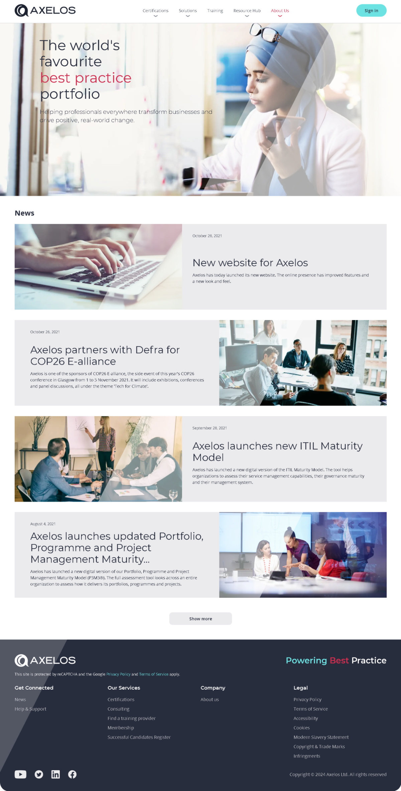
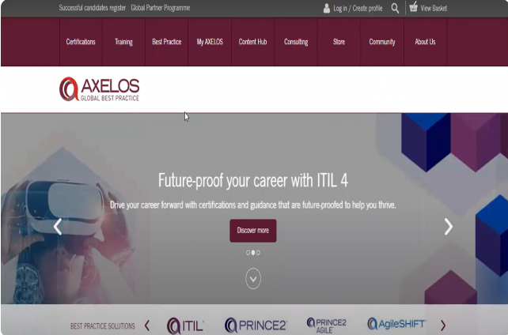

Corporate website redesignUK Government · Accessibility
Redesigning Axelos.com with Kentico CMS, .NET and Contentstack
Axelos, the global home of ITIL® and PRINCE2® certifications, needed a complete digital transformation. Its website served users in more than 200 countries but had serious usability and accessibility gaps. I led the UX/UI redesign, from research and information architecture to a WCAG 2.1 AA design system.

Redesigned home page: a clear value proposition, then news and insights. axelos.com ↗
Client
Axelos (UK Government JV)
My role
Lead UX/UI Designer
Timeline
~15 weeks
Platform
Kentico CMS, .NET, Contentstack
Standard
WCAG 2.1 AA · UK GDS
Overview
Project overview
Axelos owns the world’s most widely used best-practice frameworks, including ITIL®, PRINCE2®, MSP® and AgileSHIFT®. The site is where professionals, organisations and training partners learn about these certifications, compare them and find a way to get certified.
The old site packed in too much content, buried product value and offered no clear path to enrolment, all while needing to meet strict UK Government accessibility standards.
Before

What had to change
Dense, poorly organised content and confusing navigation
Product value and benefits not clearly communicated
No clear subscription or onboarding path
Accessibility gaps against WCAG 2.1 AA
The challenge
Problem statement and pain points
Information overload and poor UX: excessive, badly organised content and confusing navigation made it hard to find information or complete key actions.
Weak product focus and engagement: features and benefits weren’t clear, and there was no streamlined subscription or onboarding flow, which hurt acquisition and retention.
Inefficient journey to conversion: no intuitive path to subscribing or buying, so users abandoned tasks because of friction and ambiguity.
Approach
My approach and goals
Accessibility-first design: ran a WCAG 2.1 AA audit and rebuilt the component library with accessibility built in from day one.
Content strategy overhaul: worked with the content team to create clear certification journey maps.
Search UX redesign: redesigned filtering and directory search, cutting time-to-result by 60%.
Mobile-first responsive system: adaptive layouts tested across 12 device configurations.
Goal 01
Improve structure and clarity
Clear organisation, visual hierarchy, shorter sections and obvious calls to action.
Goal 02
Showcase product value
Explain what makes each certification useful, with strong visuals and real stories.
Goal 03
Boost usability and performance
Simpler journeys, great mobile experience, plain language and A/B testing.
Design process
Six steps from brief to build
A collaborative, iterative process that moved from understanding the client to a documented, reusable component library.
Client meeting
Clarify the client’s objectives and what they hope to achieve.
01
Review
Audit the existing site for strengths, weaknesses and gaps.
02
User flow
Map where users enter and how they reach key tasks.
03
Wireframing
Lay out structure first, without colours or images.
04
Prototyping
Add realistic interactions that mimic the final product.
05
Documentation
Build a library of reusable components with usage notes.
06
Stakeholders
Navigating government requirements
UK Government stakeholders, as co-owners of Axelos, required strict accessibility compliance. Marketing wanted visually rich, animation-heavy pages.
I proposed progressive enhancement: every core function fully accessible, with optional animation that respects reduced-motion preferences. Both sides approved, and the site passed WCAG AA on its first audit.
Audience
Target audience
Professionals seeking certification in ITIL®, PRINCE2®, MSP® and AgileSHIFT®, across IT service management and project delivery.
Corporate and government clients adopting best-practice frameworks to improve delivery and governance.
Training providers and consultancies who need toolkits, licensing and marketing support.
HR and L&D leaders responsible for certification pathways and upskilling.
Students and career switchers looking for foundational certifications.
Content editors and localisation teams managing multilingual content and regional versions.
Iterative phases over about 15 weeks: stakeholder alignment and discovery, then research and validation, then wireframes and high-fidelity design refined through reviews and testing. The final phase covered handoff, accessibility validation and build support.
Strategy (research)
Interview
Empathy map
User journey map
Problem & goal statement
Competitive analysis & IA
Paper wireframes
Visual design & prototyping
User feedback & approval
Usability testing phase
1
2
3
4
5
6
7
8
9
10
11
12
13
14
15
Research
Key research findings
Interviews, open card sorting and task analysis showed that the site’s structure reflected internal taxonomy, not how users think.
Users struggled to find content
Navigation categories reflected internal taxonomy, so users hesitated and explored several sections before finding anything.
Design impact: restructured the IA around users’ mental models, which led directly to card sorting.
Users think in goals, not platform features
Participants grouped content by what they wanted to do (learn, apply, download) rather than by CMS feature.
Design impact: navigation and content grouped around user goals, with less internal jargon.
Shallow navigation and strong filters win
Users avoided deep hierarchies and finished tasks faster when filters were available early.
Design impact: reduced category depth and promoted high-value filters.
Inconsistent terms reduced confidence
Different names for the same thing caused second-guessing and rechecking.
Design impact: standardised terms across navigation, content and filters.
Market
Competitor analysis
Axelos competes with other certification bodies directly and with online learning platforms indirectly. I assessed each across six dimensions.
PeopleCert and APMG International offer overlapping IT and project-management certifications, including ITIL and PRINCE2.
Indirect
Online learning platforms
Coursera, Udemy and LinkedIn Learning offer flexible individual courses that compete for the same learners.
Brand awareness & reputation: strength and perceived quality in the market
Product / service offerings: range, depth and uniqueness of programmes
Pricing strategy: pricing models, discounts and value
Distribution channels: direct sales, training partners, online
Marketing & sales: campaigns and acquisition strategy
Customer experience: websites, apps and the certification journey
Define
User personas
Two personas captured the main tension: an individual professional choosing a certification, and an organisational buyer planning one at scale.
Sarah Mehta
32 · IT Service Manager Sweden · Education: Teacher
Biography
Sarah manages IT operations and service delivery at a mid-sized tech firm. She aligns IT processes with business goals and is exploring ITIL® certification to raise her team’s efficiency and credibility.
Personality
Analytical, goal-oriented and pragmatic. Values clarity, structure and growth.
Pain points
Overwhelmed by scattered certification information
Unclear pricing and registration process
Hard to compare certification levels and benefits
Goals
Understand which ITIL® certification suits her role
Enrol in a recognised training programme
Access downloadable resources and exam prep
James Carter
45 · Project Manager Manchester, UK · Master in Arts
Biography
James oversees professional development across a large public-sector organisation. He is evaluating PRINCE2® and MSP® to standardise project delivery and upskill internal teams.
Personality
Strategic, collaborative and detail-focused. Values credibility and stakeholder alignment.
Pain points
Hard to find enterprise licensing and partner options
Few case studies or ROI metrics for executive buy-in
Frustrating navigation to toolkits and resources
Goals
Compare frameworks and their organisational impact
Identify accredited training partners
Build a scalable certification roadmap for his teams
Journey
Critical success touchpoints
Eight touchpoints decide whether a visitor becomes a certified professional. Each one got a clear improvement target.
Touchpoint
User type
Importance
Current pain points
Improvement opportunity
Homepage
All (entry point)
Critical
Unclear value proposition, confusing navigation
Clear hero message, role-based pathways
Certification pathway pages
Professionals (consideration)
Critical
Complex structure, unclear progression
Visual roadmap, clear level descriptions
Course details & pricing
All (decision maker)
Critical
Hidden pricing, unclear inclusions
Transparent pricing, comparison tool
Enrolment process
All (action)
Critical
Multi-step form, unclear next steps
Streamlined checkout, progress indicator
Learning platform access
Learners (post-purchase)
High
Login issues, unclear interface
Single sign-on, intuitive dashboard
Support resources
Learners (ongoing)
High
Hard to find help, slow response
Contextual help, live chat, FAQ
Exam booking
Certified candidates
High
Limited availability, complicated process
Easy scheduling, multiple options
Credential verification
Certified professionals
High
Slow verification, unclear process
Digital credentials, quick verification
Recommendations
UX recommendations implemented
Recommendations were prioritised by impact on conversion and accessibility, and each came with an expected impact we could measure.
Priority 1 · Critical improvements
Redesign homepage with a clear value proposition
Issue: Users don’t immediately understand what Axelos does.
Current state: Unclear next steps after enrolment.
Welcome email with clear next steps
Learning-platform orientation tour
First-module walkthrough
Success milestones
Learning community
Current state: Limited community engagement.
Forums by course level
Study-group matching
User-generated study tips
Badges for motivation
Priority 3 · Design polish & accessibility
Mobile-first responsive design
Current state: Optimise for mobile users on the go.
Mobile-optimised layouts
Touch-friendly buttons and navigation
Fast loading times
WCAG 2.1 AA compliance
Current state: Accessible to everyone, including people with disabilities.
Colour contrast ratios
Keyboard navigation
Screen-reader compatibility
Captions for video content
Low-fidelity wireframes
Greyscale wireframes of every key screen
Each greyscale wireframe follows the layout of its final screen block for block: the same header, hero, content rhythm and footer. Stakeholders signed off structure, content order and accessibility notes before any brand styling.
01Home
◎ AXELOS
Certifications ▾Solutions ▾TrainingResource Hub ▾About Us ▾
Sign in
The world's favourite best practice portfolio
News
October 28, 2021New website for Axelos
October 26, 2021Axelos partners with Defra for COP26 E-alliance
September 28, 2021Axelos launches new ITIL Maturity Model
August 4, 2021Axelos launches updated Portfolio, Programme and Project Management Maturity…
Show more
◎ AXELOSPowering Best Practice
This site is protected by reCAPTCHA and the Google Privacy Policy and Terms of Service apply.
Get ConnectedNewsHelp & Support
Our ServicesCertificationsConsultingFind a training providerMembership
CompanyAbout us
LegalPrivacy PolicyTerms of ServiceAccessibilityCookies
Clear hero message, then news as alternating image and text rows.
02Certificate detail
◎ AXELOS
Certifications ▾Solutions ▾TrainingResource Hub ▾About Us ▾
Sign in
Home › Certifications › Axelos ProPath › PRINCE2PRINCE2® Project Management CertificationsPRINCE2 helps to successfully deliver projects of any size or complexity.